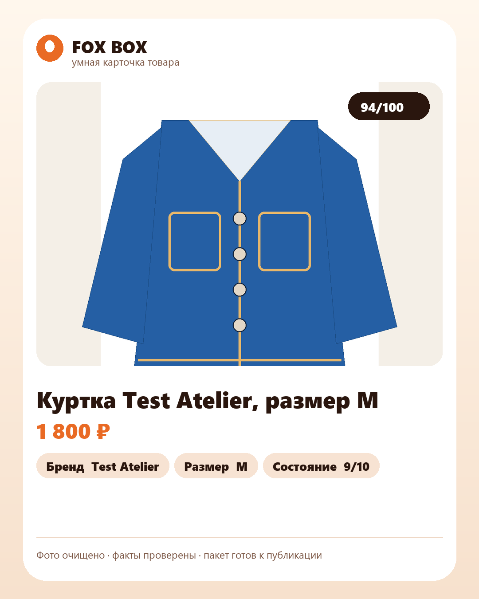
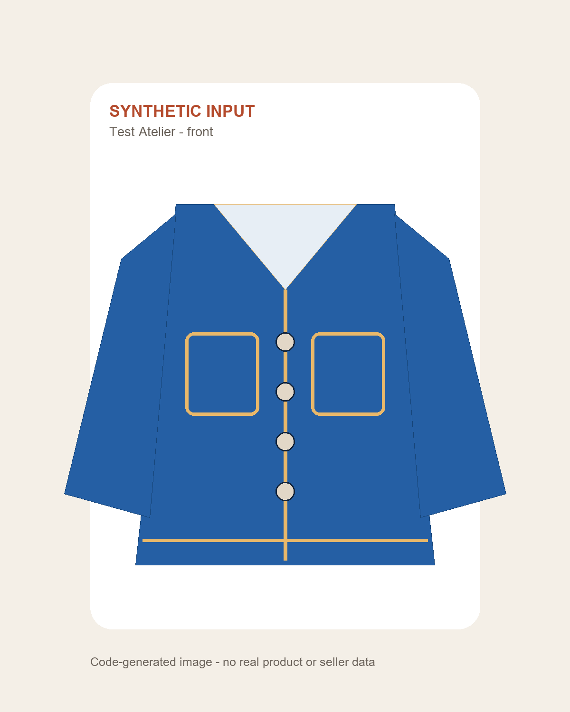

Готовая preview-карточка
Заголовок, цена, подтверждённые характеристики и score готовности.
 Fox Boxсайты · AI · автоматизация
Fox Boxсайты · AI · автоматизация
Один детерминированный прогон использует production-логику Listing Bot: проверенные факты превращаются в заголовок и описание, рассчитывается готовность, собираются preview, JSON, CSV и ZIP.
Граница доказательства: все исходные данные и изображения синтетические. Это собственное доказательство процесса, а не клиентский кейс. Оно не подтверждает подлинность товара, реальные просмотры, продажи или качество неизвестного каталога до его проверки.
На синтетическом изображении прямо указано его происхождение. Preview собран тем же production-скриптом, который используется рабочим локальным контуром.

Заголовок, цена, подтверждённые характеристики и score готовности.

Кодовый рисунок без реального товара, человека, аккаунта или закрытых данных.
Генератор создаёт три изображения, пропускает факты через production-модули, вызывает рабочие scripts preview и packaging, затем считает SHA-256.
Три детерминированных изображения и одна строка подтверждённых характеристик.
Заголовок, описание и поисковые поля строятся без добавления неизвестных свойств.
Готовность и экономика рассчитываются теми же модулями, что в рабочем боте.
Preview и ZIP создаются production-скриптами, итог фиксируется контрольными суммами.
Можно открыть человекочитаемый текст, структурированные данные, строку учёта, полный ZIP, манифест production-исходников и контрольные суммы.
Публичная карточка и служебная проверка фактов.
Открыть listing.txtПоля товара, readiness, экономика и готовый текст.
Открыть listing.jsonCSV для каталога публикаций и статусов.
Открыть inventory-row.csvФото, preview, текст, JSON, CSV и служебные данные.
Скачать ZIPSHA-256 точных модулей и скриптов, использованных в прогоне.
Открыть manifestSHA-256 всех опубликованных входов, результатов и генераторов.
Открыть checksums